Empire Stone × Empire Granite — QA
Golden Path — FG: Countertop และ Custom FG (เจดีย์บัว) ขายถึงเก็บเงิน
อัปเดตล่าสุด: 11 ตุลาคม 2569 (2026-10-11) · ระบบ stone_slab_inventory เวอร์ชัน 19.0.2.109.12 + การแก้ 3 จุดระหว่างทดสอบ (ยังไม่ commit)
สองเส้นทางของสินค้า FG เดินครบวงจรหนึ่งครั้ง: A Countertop ขายเป็น ตร.ม. ใส่ชิ้นงานและงานขอบ/เจาะในใบขาย ระบบเลือก Slab ให้ ตัด ส่งของ เก็บเงิน → B/C Custom FG เจดีย์บัว ขายเป็นชิ้น เตรียมสูตรจาก BOQ (นำเข้า Cut List) ตัดหินทีละชนิด ประกอบ ส่งของ เก็บเงิน · รันจริงโดยผู้ใช้บน eg-tst เมื่อ 11 ต.ค. 2569 · ชุดเก่า (6 ต.ค.) ยังเก็บไว้ เพราะหน้าจอและชื่อปุ่มเปลี่ยนไปแล้ว
18Test Case ทั้งหมด
3หมวด
17High Priority
1Medium Priority
0Low Priority
A. Countertop — ขายเป็น ตร.ม. ตัดจาก Slab ที่ระบบเลือกให้
ใส่ชิ้นงานและงานแปรรูปในใบขาย ระบบสร้างใบสั่งผลิต FG เลือก Slab ให้ ตัด ส่งของ เก็บเงิน · 8 test cases
| TC ID | Scenario | Precondition | Steps | ข้อมูลตัวอย่าง | Expected Result | Priority | ภาพหน้าจอ |
|---|---|---|---|---|---|---|---|
| TC-GP-FGS-01 | สร้างใบเสนอราคา เลือกสินค้า FG ที่ผูกกับวัสดุ ในระบบไม่มีสินค้าชื่อ "Countertop" — เส้นทาง A ใช้สินค้า FG ที่ผูกกับวัสดุ 1 ชนิด (ตัวอย่างนี้ GP Block Marble) ถ้าเลือกสินค้าที่ติ๊ก Custom FG (เช่นเจดีย์บัว) ระบบจะเดินเส้นทาง B แทน |
เข้าระบบเป็น Empire Granite · มีสินค้า FG GP Block Marble และ Slab ของวัสดุนี้ในคลัง |
|
Customer = Demo Hotel Customer สินค้า = GP Block Marble (12,000 บาท/ตร.ม.) |
บรรทัดสินค้า จำนวน 1.00 หน่วย ตร.ม. ราคา 12,000.00 · ยอดก่อน VAT 12,000.00 VAT 7% 840.00 · ท้ายบรรทัดมีไอคอนรายชิ้นงาน (ตัวอย่างจริง S00215) | High | 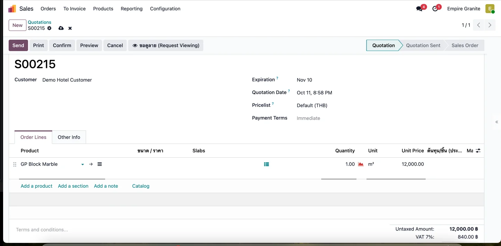 |
| TC-GP-FGS-02 | ใส่รายการชิ้นงาน 3 ชิ้น กด Save ทุกชิ้นก่อนเพิ่มชิ้นต่อไป · จำนวนในใบขายที่เป็น 1.00 ไว้ก่อน จะถูกแทนที่ด้วยพื้นที่รวมของชิ้นงานเอง |
ทำ TC-GP-FGS-01 เสร็จแล้ว |
|
ท็อปครัว 2.40 × 0.65 เกาะกลาง 1.20 × 0.60 ท็อปอ่างล้างจาน 2.00 × 0.60 (อย่างละ 1 ชิ้น) |
พื้นที่ 1.56 / 0.72 / 1.20 ตร.ม. รวม 3.48 ตร.ม. · จำนวนในบรรทัดใบขายเปลี่ยนเป็น 3.48 เอง | High | 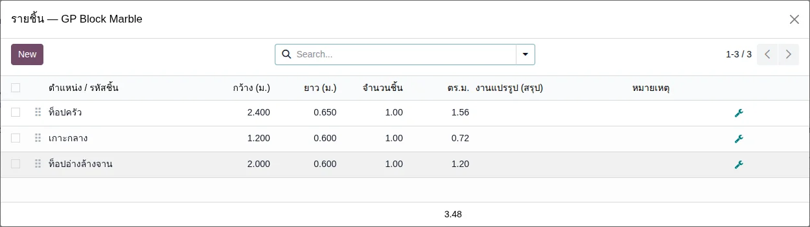 |
| TC-GP-FGS-03 | เพิ่มงานขอบและงานเจาะ แล้วตรวจใบเสนอราคา ขอบของชิ้นงานเรียก A, B, C, D มองจากด้านบน: A = ด้านกว้างบน, B = ด้านยาวขวา, C = ด้านกว้างล่าง, D = ด้านยาวซ้าย · ระบบคำนวณความยาวขอบให้เอง เลือกด้านไหนความยาวก็ตามด้านนั้น (ตอนรันรอบ 2 ผู้ทดสอบเลือกด้านต่างไป ได้ขอบ 3.05 ม. ยอดรวม 48,714.43 บาท ส่วนอื่นเหมือนกัน) |
ทำ TC-GP-FGS-02 เสร็จแล้ว |
|
ขอบ A: ท็อปครัว (2.40 ม.) + เกาะกลาง (1.20 ม.) = 3.60 ม. × 350 ตัดช่องเตา 1 จุด 1,500 ตัดช่องซิงค์ 1 จุด 1,200 |
บรรทัดหิน 3.48 ตร.ม. × 12,000 = 41,760.00 · งานขอบ 3.60 ม. × 350 = 1,260.00 · ตัดช่องเตา 1,500.00 · ตัดช่องซิงค์ 1,200.00 · ยอดก่อน VAT 45,720.00, VAT 7% 3,200.40, รวม 48,920.40 บาท | High | 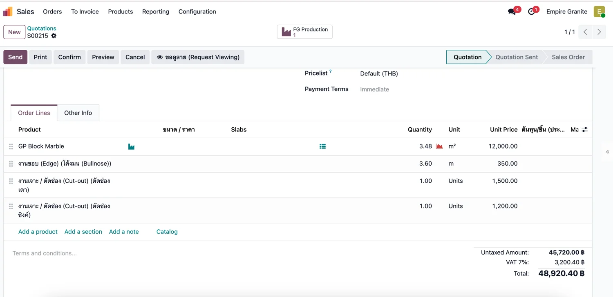 |
| TC-GP-FGS-04 | Confirm ใบขาย แล้วเปิดใบสั่งผลิต FG ที่ระบบสร้างให้ | ทำ TC-GP-FGS-03 เสร็จแล้ว |
|
- | ใบสั่งผลิตสถานะ Draft ชื่อแนว EG01/STFG/xxxxx (ตัวอย่างจริง EG01/STFG/00060) ป้าย "ผลิต FG จาก Slab" ผูกกับบรรทัดใบขาย · การ์ดแสดง "ต้องใช้ 3.83 ตร.ม." และ "Slab ที่เลือก 7.50 ตร.ม." ป้ายเขียว "พอ" · แถบเหลืองบอกให้กด "ย้ายไปสถานีตัด" ก่อน Confirm · แท็บผลผลิต FG มี 3 แถว (2.40 × 0.65, 1.20 × 0.60, 2.00 × 0.60) พร้อมหมายเหตุงานขอบและงานเจาะให้ช่างอ่าน | High | 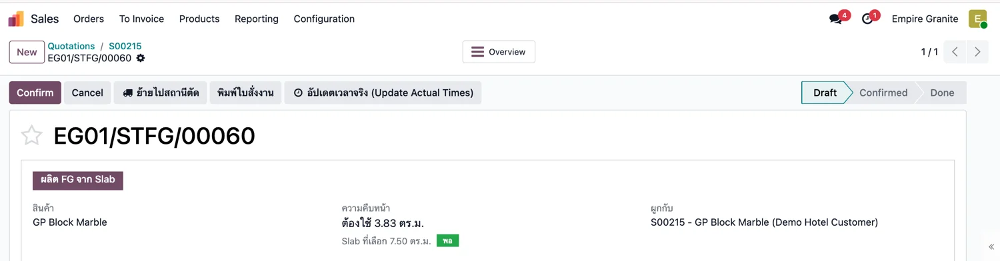 |
| TC-GP-FGS-05 | ย้าย Slab ไปสถานีตัด แล้ว Confirm ใบสั่งผลิต ตั้งแต่ 11 ต.ค. 2569 แท็บ Components แสดงเฉพาะ Slab ที่ระบบเลือกจริง (Polished, 2 cm) — ก่อนแก้ จะมีแถว "Honed, 3 cm" ป้ายแดง Not Available ค้างอยู่ ซึ่งลูกค้าเห็นแล้วเข้าใจผิดว่าของไม่พอ |
ทำ TC-GP-FGS-04 เสร็จแล้ว |
|
Slab ที่ระบบเลือก = BLK-26-0006-24 และ -25 (แผ่นละ 3.00 × 1.25 ม. รวม 7.50 ตร.ม.) | ข้อความ "ย้ายสำเร็จ ... ย้าย 2 lot ไป Stone Production แล้ว — กด Confirm ได้เลย" · สถานะ Confirmed ปุ่มเปลี่ยนเป็น "ผลิต FG เสร็จ" · Components มีแถวเดียว Slab (Polished, 2 cm) 2.00 Units ป้ายเขียว Available | High | 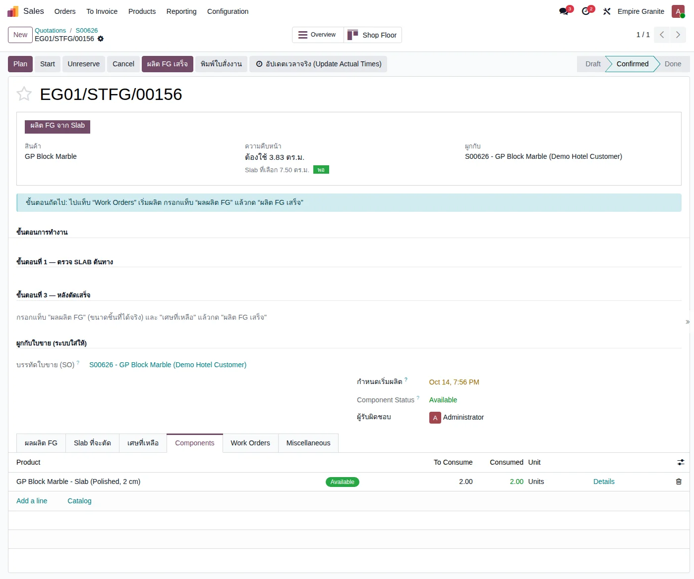 |
| TC-GP-FGS-06 | ผลิต FG เสร็จ (Complete FG Production) แท็บ "เศษที่เหลือ" กรอกได้ (Slab ต้นทาง ขนาด จำนวน) เพื่อให้เศษได้ Lot ของตัวเองและหักต้นทุนส่วนเศษออกจาก FG — ในการรันจริงไม่ได้กรอกเศษ ต้นทุน Slab ทั้งแผ่นจึงเข้า FG ทั้งหมด (ยังไม่ได้ทดสอบกรณีมีเศษในรอบนี้ ดูผลของเดิมในบท 32 หัวข้อ A.8–A.10) |
ทำ TC-GP-FGS-05 เสร็จแล้ว |
|
ไม่กรอกเศษ | ข้อความ "Complete FG Production สำเร็จ ... ผลิตสำเร็จ 3.48 หน่วย" · สถานะ Done · ได้ FG 3 Lot (ตัวอย่าง FG-EG01/STFG/00061-01 = 2.40 × 0.65 · -02 = 1.20 × 0.60 · -03 = 2.00 × 0.60) อยู่ที่ EG01/Stock/Stone FG รวม 3.48 ตร.ม. · มูลค่าวัสดุ FG 2,430.00 บาท (Slab 2 แผ่น) · มีสมาร์ทปุ่ม Traceability / Product Moves | High | 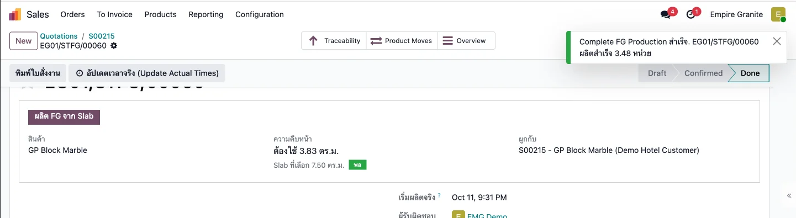 |
| TC-GP-FGS-07 | ส่งของ — ตรวจ Lot แล้ว Validate ⚠ ก่อนแก้ (11 ต.ค. 2569) ใบส่งของ Countertop อาจจอง FG ของงานเก่าปน แล้วขึ้นป้ายแดง Not Available ต้องลบแถวผิดและเพิ่ม Lot ที่ถูกเอง · หลังแก้ ระบบจองเฉพาะ Lot ที่ใบสั่งผลิตของบรรทัดนี้ผลิตให้ครบเอง แต่ยังควรเปิด Details ดูก่อน Validate ทุกครั้ง · ต้องส่งของ (Done) ก่อนจึงออกใบแจ้งหนี้ได้ ถ้ากด Create Invoice ก่อน ระบบแจ้ง "No items are available to invoice" |
ทำ TC-GP-FGS-06 เสร็จแล้ว |
|
- | Details แสดง 3 แถวจาก Stone FG: -01 (1.56), -02 (0.72), -03 (1.20) รวม 3.48 ตร.ม. ไม่มี Lot ของงานอื่น · ใบส่งของเป็น Done Demand 3.48 Quantity 3.48 ตร.ม. และใบขายคอลัมน์ Delivered เป็น 3.48 (ตัวอย่างจริง EG01/OUT/00110) | High | 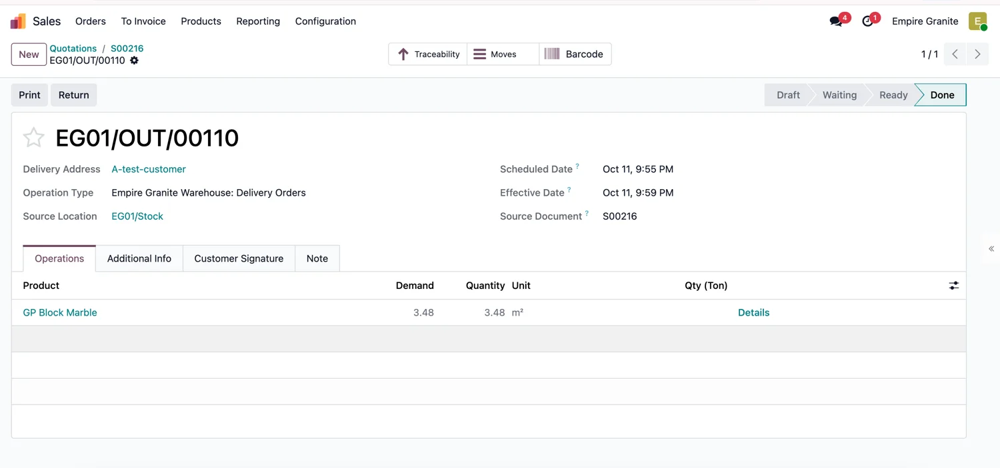 |
| TC-GP-FGS-08 | ออกใบแจ้งหนี้ Confirm และตรวจรายการบัญชี | ทำ TC-GP-FGS-07 เสร็จแล้ว (ใบส่งของ Done) |
|
- | ใบแจ้งหนี้ Posted ยอดก่อน VAT 45,720.00, VAT 3,200.40, รวม 48,920.40 · เครดิต 411100 รายได้ 4 บรรทัด (41,760 / 1,260 / 1,500 / 1,200) · เครดิต 213200 ภาษีขาย 3,200.40 · เดบิต 112100 ลูกหนี้ 48,920.40 · เดบิต 511110 ต้นทุนขาย 2,430.00 เครดิต 113150 สินค้าคงเหลือ Stone FG 2,430.00 (ตรงกับต้นทุน FG) (ตัวอย่างจริง INV/2026/00025) | High | 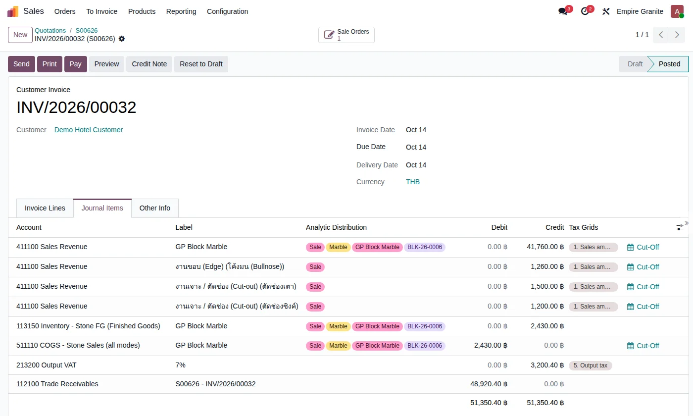 |
B. Custom FG (เจดีย์บัว) — เตรียมสูตรจาก BOQ แล้วขายเป็นชิ้น
นำเข้า Cut List เป็น BOQ ขายเป็นชิ้น โหลด BOQ เป็นสูตร Confirm แล้วระบบสร้างใบสั่งผลิตให้ครบ · 4 test cases
| TC ID | Scenario | Precondition | Steps | ข้อมูลตัวอย่าง | Expected Result | Priority | ภาพหน้าจอ |
|---|---|---|---|---|---|---|---|
| TC-GP-FGS-09 | นำเข้าไฟล์ Cut List เป็น BOQ (ทำครั้งเดียวต่อรุ่นสินค้า) การนำเข้าตั้งเผื่อเสียของหินเป็น 0% (ถ้าต้องการ 10% ให้ตั้งที่บรรทัดหินเอง) · แถววัสดุสิ้นเปลือง/ค่าแรงแสดงเป็น "ชิ้น 0 × 0 mm" เป็นเพียงการแสดงผล · Rate ใหม่ 7 รายการ (ตั้งเครื่อง ตัด ประกอบ ขัดเก็บงาน บรรจุ ไม้ลัง น้ำยาขัดเงา) เป็นราคาตัวอย่าง ต้องปรับเป็นราคาจริงก่อนใช้งาน |
มี Rate ครบ 14 รายการ · ไฟล์ตัวอย่าง cutlist-import-example-chedi-bua-custom-fg.xlsx (หน้า Library) |
|
Customer = A-test-customer ไฟล์ = cutlist-import-example-chedi-bua-custom-fg.xlsx |
Preview แสดง 14 กลุ่ม จับคู่ Rate ให้เองทุกแถว (NERO 4 ชิ้น 0.36 ตร.ม. · GP 6 ชิ้น 0.54 ตร.ม. · วัสดุสิ้นเปลือง 5 แถว · ค่าแรง 7 แถว) · ได้ BOQ Line 14 แถว หินมีรายชิ้น (เช่น N-01: 450 × 300 mm) · ต้นทุนรวม 3,906.92 บาทต่อชิ้น = หิน 754.92 + วัสดุสิ้นเปลือง 675.00 + ค่าแรง 2,477.00 (ตัวอย่างจริง BOQ0024) | High | 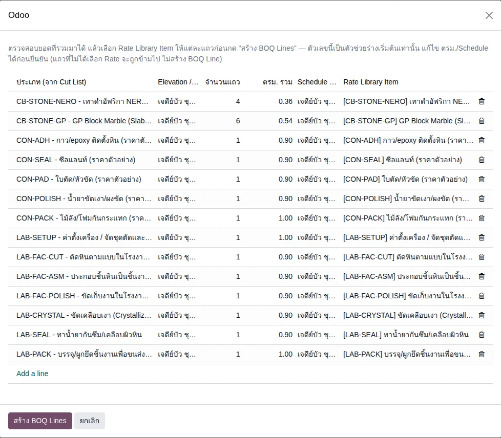 |
| TC-GP-FGS-10 | สร้างใบเสนอราคา เลือกสินค้า Custom FG จำนวนในบรรทัดคือจำนวนชิ้นสำเร็จรูป ราคาตั้งไว้ที่สินค้า แก้ได้ที่บรรทัด · สินค้าต้องติ๊ก "เป็น Custom FG" และไม่ผูกวัสดุเดียว |
เข้าระบบเป็น Empire Granite · มีสินค้า เจดีย์บัว (Custom FG, 50,000 บาท/ชิ้น) |
|
Customer = A-test-customer สินค้า = เจดีย์บัว จำนวน = 3 ชิ้น × 50,000 |
ยอดก่อน VAT 150,000.00, VAT 7% 10,500.00, รวม 160,500.00 · บรรทัดสินค้ามีไอคอน "โหลด BOQ" และ "ดูสูตร" · ต้นทุน/ชิ้น (ประมาณ) ยังเป็น 0.00 เพราะยังไม่ได้โหลดสูตร (ตัวอย่างจริง S00217) | High | 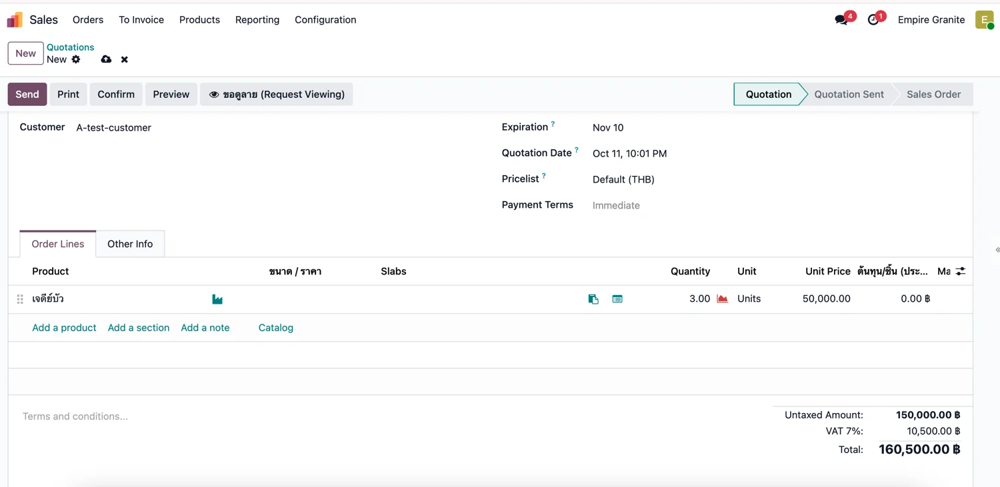 |
| TC-GP-FGS-11 | โหลด BOQ เป็นสูตรของบรรทัด สูตรเป็นสำเนาจาก BOQ ณ ตอนโหลด แก้ BOQ ภายหลังไม่กระทบ และหลัง Confirm สูตรถูกล็อก |
ทำ TC-GP-FGS-09 และ TC-GP-FGS-10 เสร็จแล้ว (ใบเสนอราคา Save แล้ว) |
|
BOQ = BOQ0024 | สูตร 14 แถว (ปริมาณต่อ 1 ชิ้นงาน): NERO 0.36 ตร.ม. × 1,611.00 = 579.96 · GP Block Marble Slab 0.54 ตร.ม. × 324.00 = 174.96 · วัสดุสิ้นเปลือง 5 แถว · ค่าแรง 7 แถว (ตั้งเครื่อง 1,200 · ตัด 225 · ประกอบ 360 · ขัดเก็บงาน 126 · เคลือบเงา 162 · กันซึม 54 · บรรจุ 350) · รวม 3,906.92 บาท/ชิ้น · ทุกแถวเผื่อเสีย 0.00 | High | 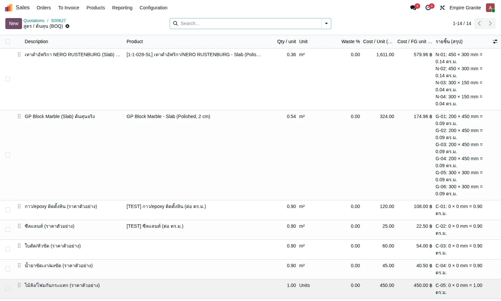 |
| TC-GP-FGS-12 | Confirm ใบขาย — ระบบสร้างใบสั่งผลิตให้ครบ ปุ่ม FG Production บนใบขายแสดงเฉพาะใบงานประกอบ ใบตัดหินอยู่ในปุ่ม "แผนตัด" บนใบงานประกอบ · วัสดุสิ้นเปลือง 3 รายการและค่าแรง 7 รายการที่ไม่มีสินค้าผูกจะไม่ขึ้นใน Components (เป็นแถวต้นทุนอย่างเดียว) |
ทำ TC-GP-FGS-11 เสร็จแล้ว |
|
- | ได้ใบสั่งผลิต 3 ใบ สถานะ Draft: งานประกอบ EG01/STFG/00062 (3.00 Units, ป้าย "งานกำหนดเอง (Custom)") · ใบตัดหิน NERO EG01/STCPL/00020 (12 ชิ้น = 4 × 3) · ใบตัดหิน GP EG01/STCPL/00021 (18 ชิ้น = 6 × 3) · Components ของงานประกอบมี กาว/epoxy 2.70 ตร.ม. และ ซีลแลนท์ 2.70 ตร.ม. ป้ายเขียว Available | High | 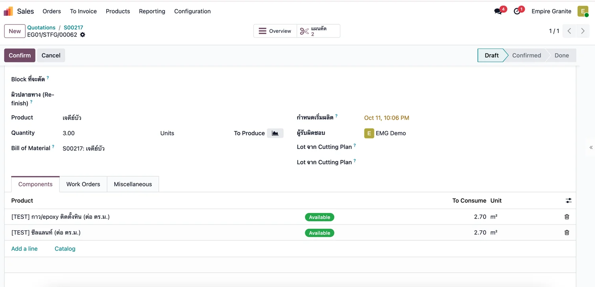 |
C. Custom FG — ตัดหินทีละชนิด ประกอบ ส่งมอบ และเก็บเงิน
ใบตัดหินแต่ละชนิด (ใช้ปุ่มคัดลอกแผน) งานประกอบ Produce All ส่งของ ใบแจ้งหนี้ และตรวจต้นทุนค่าแรง · 6 test cases
| TC ID | Scenario | Precondition | Steps | ข้อมูลตัวอย่าง | Expected Result | Priority | ภาพหน้าจอ |
|---|---|---|---|---|---|---|---|
| TC-GP-FGS-13 | ใบตัดหิน NERO — ย้ายไปสถานีตัด Confirm กรอกขนาดจริง แล้วถอดแบบเสร็จ ปุ่ม "คัดลอกแผนเป็นขนาดจริง" (เพิ่มเมื่อ 11 ต.ค. 2569) เติมขนาดจริงจากแผนให้ทุกแถวที่ยังว่างในครั้งเดียว แล้วช่างแก้เฉพาะชิ้นที่ตัดไม่ตรงแบบ ค่าที่กรอกไว้แล้วไม่ถูกทับ · ไม่ได้บันทึกเศษที่เหลือ ต้นทุน Slab ทั้งแผ่นจึงเข้า WIP ทั้งหมด (2,899.80 สูงกว่าประมาณการสูตร 579.96 × 3 = 1,739.88) |
ทำ TC-GP-FGS-12 เสร็จแล้ว |
|
Slab ที่ระบบเลือก = BLK-26-0002-23 (2.00 × 0.90 ม.) ชิ้นงาน 12 ชิ้น: 0.45 × 0.30 และ 0.30 × 0.15 หนา 0.02 อย่างละ 6 ชิ้น |
ข้อความ "ย้ายสำเร็จ 1 lot ไป Stone Production" · หลังกดปุ่มคัดลอก ช่อง "จริง L / จริง H / จริง ความหนา" ครบทุกแถวเท่าแผน · ใบเป็น Done การ์ด "แผน 1.08 ตร.ม. ตัดได้จริง 1.08 ตร.ม." · ได้ WIP Lot CUT-EG01/STCPL/00020 จำนวน 12 ชิ้น ที่ Stone Production มูลค่า 2,899.80 บาท · ช่อง "ป้อนให้งานประกอบ" = EG01/STFG/00062 | High | 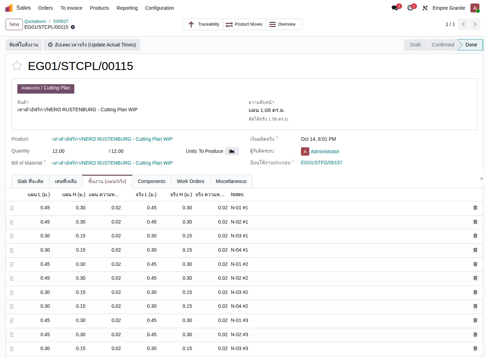 |
| TC-GP-FGS-14 | ใบตัดหิน GP Block Marble — ทำแบบเดียวกัน ปุ่มคัดลอกเติมเฉพาะช่องที่ว่าง — ถ้าแก้แถวหนึ่งเอง ปุ่มไม่ทับค่านั้น (ทดสอบแล้ว) · ถ้าช่างพิมพ์ขนาดจริงใหญ่กว่าแผน การ์ด "ตัดได้จริง" จะสูงกว่าแผน แต่ต้นทุนไม่เปลี่ยน เพราะต้นทุนคิดจาก Slab ที่ใช้จริง |
ทำ TC-GP-FGS-13 เสร็จแล้ว |
|
Slab ที่ระบบเลือก = BLK-26-0006-28 ชิ้นงาน 18 ชิ้น: 0.20 × 0.45 (12 ชิ้น) และ 0.30 × 0.30 (6 ชิ้น) หนา 0.02 |
ใบเป็น Done จำนวน 18.00 · แผน 1.62 ตร.ม. · ได้ WIP Lot CUT-EG01/STCPL/00021 จำนวน 18 ชิ้น ที่ Stone Production มูลค่า 1,215.00 บาท (Slab ทั้งแผ่น) | High | 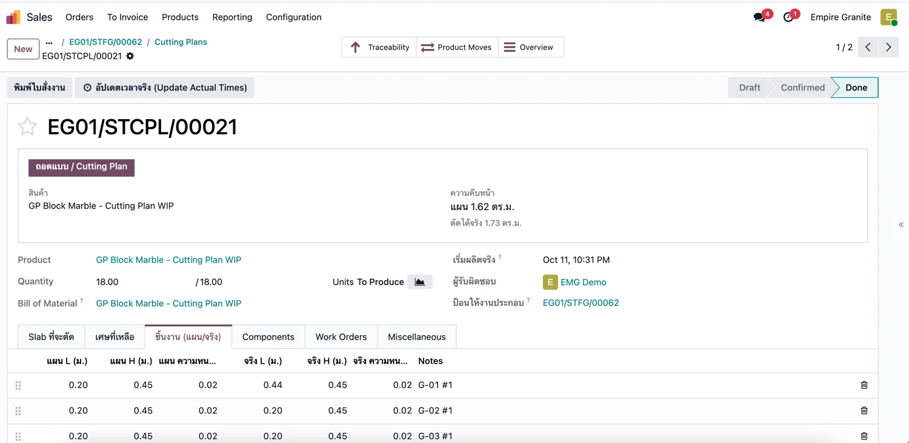 |
| TC-GP-FGS-15 | Confirm งานประกอบ แล้ว Produce All Confirm งานประกอบไม่ได้จนกว่าใบตัดหินที่ผูกกันทุกใบจะ Done · ใบงานประกอบที่ Done แล้วมีปุ่ม Unbuild (ยังไม่ได้ทดลอง) |
ทำ TC-GP-FGS-14 เสร็จแล้ว (ใบตัดหินทั้ง 2 ใบ Done) |
|
- | Component Status = Available · ช่อง "Lot จาก Cutting Plan" แสดง CUT-EG01/STCPL/00020 และ 00021 · Components: กาว/epoxy 2.70 ตร.ม., ซีลแลนท์ 2.70 ตร.ม., WIP NERO 12, WIP GP 18 · หลัง Produce All สถานะ Done Quantity 3.00 / 3.00 มีสมาร์ทปุ่ม Serial Numbers 3 · ได้ FG เจดีย์บัว 3 ชิ้น (Serial ตัวอย่าง CB-00025 ถึง -27) มูลค่าวัสดุ 4,506.30 บาท (= 2,899.80 + 1,215.00 + 324.00 + 67.50) ชิ้นละ 1,502.10 | High | 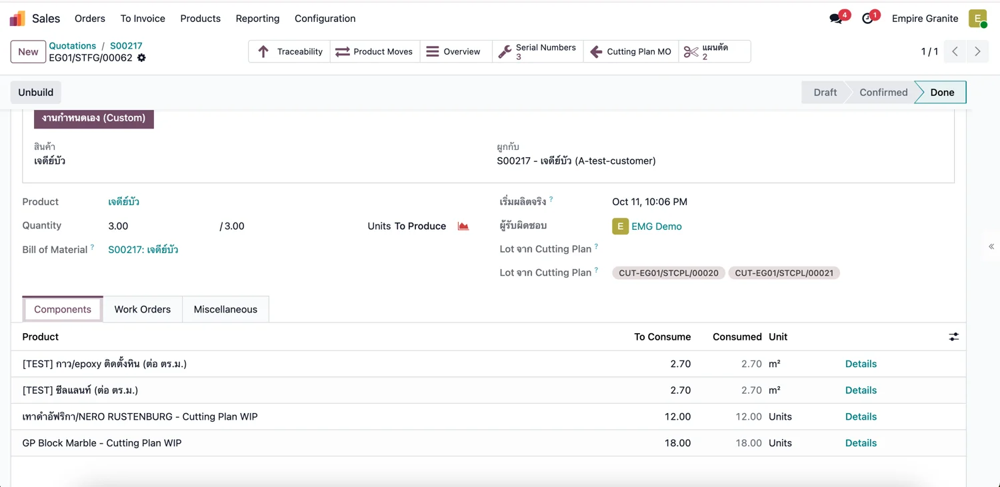 |
| TC-GP-FGS-16 | ส่งของ Custom FG ตาม Serial ถ้ากด Create Invoice ก่อนส่งของ ระบบแจ้ง "Cannot create an invoice. No items are available to invoice" ให้ Validate ใบส่งของให้เป็น Done ก่อน |
ทำ TC-GP-FGS-15 เสร็จแล้ว |
|
- | Details แสดง Serial 3 ตัวจาก EG01/Stock/Stone FG ตัวละ 1.00 Units (ไม่มี FG ของงานอื่นปน) · ใบส่งของ Done Demand 3.00 Quantity 3.00 Units (ตัวอย่างจริง EG01/OUT/00111) · ใบขาย Delivered = 3.00 | High | 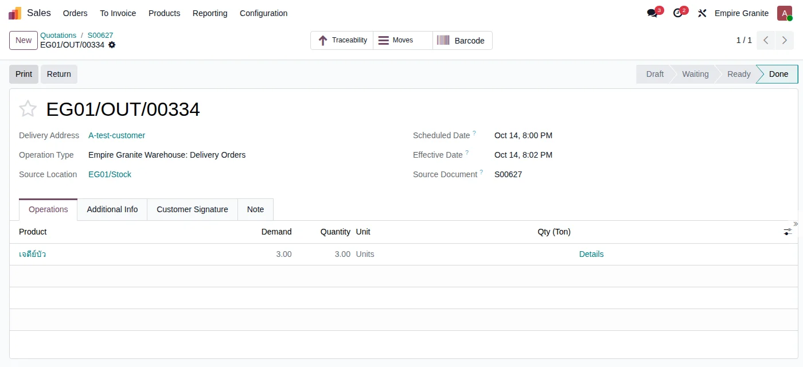 |
| TC-GP-FGS-17 | ออกใบแจ้งหนี้ Confirm และตรวจรายการบัญชี | ทำ TC-GP-FGS-16 เสร็จแล้ว |
|
- | ใบแจ้งหนี้ Posted ยอดก่อน VAT 150,000.00, VAT 7% 10,500.00, รวม 160,500.00 · เครดิต 411100 รายได้ 150,000.00 · เครดิต 213200 ภาษีขาย 10,500.00 · เดบิต 112100 ลูกหนี้ 160,500.00 · เดบิต 511110 ต้นทุนขาย 4,506.30 เครดิต 113150 สินค้าคงเหลือ Stone FG 4,506.30 (ต้นทุนวัสดุของ FG ไม่รวมค่าแรง) (ตัวอย่างจริง INV/2026/00027) | High | 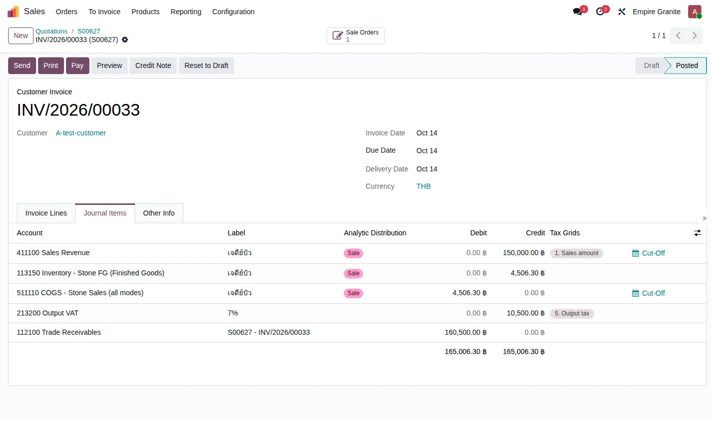 |
| TC-GP-FGS-18 | ตรวจรายการบัญชีค่าแรงของงานประกอบ ⚠ ข้อสังเกตที่ควรถามลูกค้า: ต้นทุนรวมที่ลงบัญชี 75,000 บาท (วัสดุ 4,506.30 + ค่าแรง 70,493.70) ต่างจากประมาณการ BOQ 11,720.76 (3,906.92 × 3) มาก เพราะระบบมีกติกาต้นทุนไม่ต่ำกว่า 50% ของรายได้ แล้วเติมส่วนต่างเป็นค่าแรง แถวค่าแรงและวัสดุสิ้นเปลือง (ที่ไม่มีสินค้า) ใน BOQ ไม่ถูกนำไปลงบัญชีเลย ใช้เป็นประมาณการในสูตรเท่านั้น · กติกา 50% เป็นการออกแบบเดิมของระบบ (ตั้งค่าได้) ไม่ใช่ความผิดพลาดของการรัน |
ทำ TC-GP-FGS-15 เสร็จแล้ว |
|
รายได้บรรทัดงาน = 150,000 · วัสดุ FG = 4,506.30 · ต้นทุนขั้นต่ำ 50% | รายการ MISC/2026/10/0026 "FG Production Labor — EG01/STFG/00062" เดบิต 511120 ค่าแรง 70,493.70 เครดิต 212300 (บัญชีค้างจ่ายค่าแรง) 70,493.70 (= 50% × 150,000 − 4,506.30) · ค่าแรงนี้ไม่รวมอยู่ในต้นทุนขาย 4,506.30 ของใบแจ้งหนี้ | Medium | - |